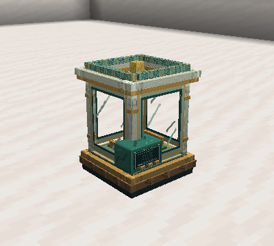

Incubator
Accelerate a captured juvenile's growth while preserving its identity, genes, and lineage. Each cycle is started manually by the caretaker.

Recipe
I G I
G B G
I R I
I = iron ingot; G = glass; B = Breeding Gel; R = redstone. Item ID: slimeevolution:incubator.
Start a cycle
- Capture a juvenile using the normal trust, health, and energy rules.
- Insert its capsule, compatible food, and Breeding Gel, Genetic Catalyst, or Royal Gel.
- As its caretaker, press Incubate. Hunger must be below 80, comfort at least 40, and energy at least 20.
- Wait 200 loaded ticks: ten seconds at 20 ticks per second.
- Inspect the individual, remove the capsule, or start another cycle if growth remains.
| Supplement | Maximum reduction in remaining growth |
|---|---|
| Breeding Gel | 1,200 ticks |
| Genetic Catalyst | 2,400 ticks |
| Royal Gel | 3,600 ticks |
A completed cycle consumes one compatible food and one supplement. Each supplement adds 200 ticks of chronological age; assisted growth and chronological age are separate. The previously determined adult size is preserved.
Food reduces hunger by up to 20 and restores up to 10 energy, within the 0–100 limits. Comfort and trust remain unchanged. The meal cooldown becomes 100 ticks. Genome, lineage, metamorphosis, and other cooldowns are preserved; health ratio follows size changes. Incubation does not grant mutations, breeding, trust, or metamorphoses.
Missing valid food or supplement pauses work. Changing the specimen cancels without charging. Completing a cycle does not automatically start another. Adults cannot start a cycle, but a completed result remains readable if the juvenile matured.
Remove the updated capsule and release it normally. Previous copies no longer represent the valid capture.